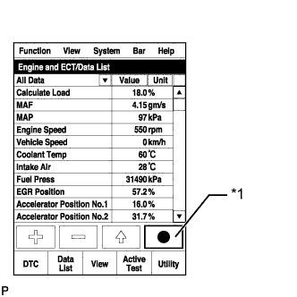

СИСТЕМА ECD (для моделей с DPF) > Недостаточная мощность или провал в работе двигателя |
| Неисправность | Основной участок неисправности | Сопутствующий участок неисправности |
| (a) Неисправности в форсунках в сборе
|
|
| Неисправности и признаки для узлов топливной системы Common Rail для дизельного двигателя |
Система управления двигателем
| Основная неисправность | Понижение рабочих характеристик (попадание постороннего объекта) |
| Признаки | Недостаточная мощность, черный дым |
| Data List | MAF |
| |
| Признак и соответствующая ему основная неисправность |
|
| Параметры из Data List |
|
| Основная неисправность |
|
| Признаки | Недостаток мощности (при трогании автомобиля, при большой нагрузке) (при повышении частоты вращения коленчатого вала двигателя в неподвижном автомобиле черный дым не выпускается) |
| Параметры из Data List | MAP, Target Booster Pressure
|
| Основная неисправность | Засорение |
| Признаки | Недостаток мощности (высокая частота вращения коленчатого вала двигателя, при большой нагрузке) |
| Параметры из Data List | MAP, Target Booster Pressure Если при полностью нажатой педали акселератора значение MAP в течение более 5 с на 20 кПа меньше значения Target Booster Pressure, будет ощущаться недостаток мощности. |
| Основная неисправность | Неисправность системы свечей накаливания |
| Признаки | Затрудненный запуск, неравномерный холостой ход, детонация, белый дым (в холодную погоду) |
| Параметры из Data List | Проверьте контрольную лампу свечи накаливания |
| Способ диагностики | Измерьте сопротивление свечи накаливания |
| Основная неисправность | Повреждение, заклинивание |
| Признаки | Коленчатый вал двигателя не прокручивается, низкая частота вращения коленчатого вала двигателя при прокручивании, ненормальный шум |
| Основная неисправность | Потеря компрессии |
| Признаки | Неравномерный холостой ход (постоянно недостаток мощности) |
| Data List | Engine Speed of Cyl#
|
Система впрыска дизельного двигателя
| Основная неисправность | - |
| Признаки | Затрудненный запуск, заглохание двигателя, неравномерный холостой ход, недостаточная мощность |
| Параметры из Data List | Fuel Press, Target Common Rail Pressure, Target Pump SCV Current
|
| Диагностический код неисправности DTC | Даже если значение Fuel Press меньше значения Target Common Rail Pressure, DTC не сохраняется. |
| Основная неисправность | Засорение |
| Признаки | Затрудненный запуск, заглохание двигателя, неравномерный холостой ход, недостаточная мощность |
| Параметры из Data List | Fuel Press, Target Common Rail Pressure
|
| Диагностический код неисправности DTC | Даже если значение Fuel Press меньше значения Target Common Rail Pressure, DTC не сохраняется. |
| Основная неисправность | Засорение |
| Признаки | Неравномерный холостой ход, недостаточная мощность, черный дым, белый дым, детонация |
| Параметры из Data List | Injection Feedback Val
|
| Основная неисправность | Неисправность цепи: форсунка в сборе не открывается. |
| Признаки | Затрудненный запуск, неравномерный холостой ход, недостаток мощности, черный дым, белый дым, детонация |
| Параметры из Data List | То же, что для форсунки в сборе |
| Диагностический код неисправности DTC | Когда электронный блок привода форсунок неисправен, могут сохраняться некоторые DTC. |
| Основная неисправность | Обрыв цепи, понижение рабочих характеристик (попадание постороннего объекта) |
| Признаки | Затрудненный запуск, неравномерный холостой ход, заглохание двигателя, недостаток мощности |
| Параметры из Data List | Fuel Press, Target Common Rail Pressure
|
| Диагностический код | Если датчик давления топлива неисправен, могут регистрироваться некоторые DTC. |
| Основная неисправность | - |
| Признаки | Затрудненный запуск, неравномерный холостой ход (особенно в холодную погоду) |
Система рециркуляции отработавших газов дизельного двигателя
| Основная неисправность |
|
| Признаки |
|
| Параметры из Data List | Actual EGR Valve Pos., Target EGR Position
|
Дроссельная заслонка дизельного двигателя
| Основная неисправность | Заедание, неплавное перемещение |
| Признаки |
|
| Параметры из Data List |
|
| Параметры режима Data List, отсносящиеся к недостаточной мощности |
| Пояснение признака |
| Недостаточная мощность | Мощность дизельного двигателя определяется количеством впрыскиваемого топлива и количеством воздуха на впуске. Количество впрыскиваемого топлива определяется давлением в топливной системе и продолжительностью открывания форсунки. В основном, давление в топливной системе регулируется так, чтобы оно достигало заданного давления в топливной системе. Дроссельная заслонка не ограничивает объем подаваемого воздуха, поэтому на холостом ходу абсолютное давление в коллекторе почти равно атмосферному давлению. При частоте примерно 1500 об/мин включается турбонагнетатель, и абсолютное давление в коллекторе становится выше атмосферного давления. Абсолютное давление в коллекторе регулируется так, чтобы оно достигало заданного давления наддува при разгоне автомобиля с полностью открытой дроссельной заслонкой. Кроме того, при разгоне автомобиля с полностью открытой дроссельной заслонкой клапан РОГ полностью закрывается, чтобы сохранить массовый расход воздуха. |
| 1.СЧИТАЙТЕ КОДЫ DTC (ОТНОСЯЩИЕСЯ К ДВИГАТЕЛЮ) |
Подсоедините портативный диагностический прибор к DLC3.
Включите зажигание (IG) и портативный диагностический прибор.
Войдите в следующие меню: Powertrain / Engine and ECT / DTC.
Считайте ожидающие обработки коды DTC.
| Результат | Перейти к |
| Коды DTC не выводятся | А |
| Выводятся коды DTC, относящиеся к двигателю | B |
|
| ||||
| А | |
| 2.ЗАФИКСИРУЙТЕ МГНОВЕННЫЕ ЗНАЧЕНИЯ ПАРАМЕТРОВ В РЕЖИМЕ ХОЛОСТОГО ХОДА И ПРИ ЧАСТОТЕ ВРАЩЕНИЯ 4000 ОБ/МИН (ПРОЦЕДУРА 2) |
Подсоедините портативный диагностический прибор к DLC3.
Запустите двигатель и включите портативный диагностический прибор.
Войдите в следующие меню: Powertrain / Engine and ECT / Data List / Lack of power.
|  |
При отсутствии нагрузки после прогрева двигателя зафиксируйте мгновенные значения параметров в режиме холостого хода и на частоте вращения 4000 об/мин.
| *1 | Кнопка фиксации мгновенных значений параметров |
| ДАЛЕЕ | |
| 3.ЗАФИКСИРУЙТЕ МГНОВЕННЫЕ ЗНАЧЕНИЯ ПАРАМЕТРОВ ПРИ НЕДОСТАТКЕ МОЩНОСТИ (ПРОЦЕДУРА 3) |
Подсоедините портативный диагностический прибор к DLC3.
Запустите двигатель и включите портативный диагностический прибор.
Войдите в следующие меню: Powertrain / Engine and ECT / Data List / All Data.
Проверьте, ощущается ли недостаток мощности во время дорожного испытания.
| *1 | Кнопка фиксации мгновенных значений параметров |
| Результат | Перейти к |
| Ощущается явный недостаток мощности | А |
| Явного недостатка мощности не ощущается | B |
|
| ||||
| А | |
| 4.ПРОВЕРЬТЕ ФИКСИРОВАННЫЕ ЗНАЧЕНИЯ ПАРАМЕТРОВ (MAP И MAF) |
Проверьте значения MAP и MAF в наборе мгновенных значений параметров, зафиксированных в процедуре 2 при работе двигателя с частотой вращения 4000 об/мин без нагрузки.
| Результат | Перейти к |
| Параметр MAP имеет значение не менее 114 кПа, а параметр MAF – не менее 84 г/с*1 | А |
| Значение параметра MAP ниже 90 кПа*2 | B |
| Любое состояние, кроме перечисленных выше*3 | C |
|
| ||||
|
| ||||
| А | |
| 5.ПРОВЕРЬТЕ ФИКСИРОВАННЫЕ ЗНАЧЕНИЯ ПАРАМЕТРОВ (FUEL PRESS, TARGET COMMON RAIL PRESSURE, MAP И TARGET BOOSTER PRESSURE) |
Проверьте значения Fuel Press, Target Common Rail Pressure, MAP и Target Booster Pressure в наборе мгновенных значений параметров, зафиксированных в процедуре 3 при разгоне автомобиля с полностью нажатой педалью акселератора на 2-й передаче.
| Результат | Перейти к |
| При частоте вращения коленчатого вала двигателя 3000 об/мин параметр MAP имеет значение ниже 90 кПа | А |
| Разность значений параметров Fuel Press и Target Common Rail Pressure не меньше 20000 кПа | B |
| За исключением указанного выше | C |
|
| ||||
|
| ||||
| А | |
| 6.ПРОВЕРЬТЕ СИСТЕМУ ВПУСКА |
Убедитесь в отсутствии утечек воздуха и засоров между корпусом воздушного фильтра и турбонагнетателем, а также между турбонагнетателем и впускным коллектором.
|
| ||||
| OK | |
| 7.ЗАМЕНИТЕ ФИЛЬТРУЮЩИЙ ЭЛЕМЕНТ ТОПЛИВНОГО ФИЛЬТРА В СБОРЕ |
Замените фильтрующий элемент топливного фильтра в сборе (Нажмите здесь).
| ДАЛЕЕ | |
| 8.ЗАМЕНИТЕ ФОРСУНКИ ВСЕХ ЦИЛИНДРОВ В СБОРЕ |
Замените форсунки в сборе (Нажмите здесь).
| ДАЛЕЕ | |
| 9.УДАЛИТЕ ВОЗДУХ ИЗ ТОПЛИВНОЙ СИСТЕМЫ |
Удалите воздух из топливной системы (Нажмите здесь).
| ДАЛЕЕ | |
| 10.ЗАРЕГИСТРИРУЙТЕ КОМПЕНСАЦИОННЫЙ КОД ФОРСУНКИ И ПРОИЗВЕДИТЕ НАСТРОЙКУ ОБЪЕМА ПРЕДВАРИТЕЛЬНОГО ВПРЫСКА |
Зарегистрируйте компенсационный код форсунки (Нажмите здесь).
Произведите настройку объема предварительного впрыска (Нажмите здесь).
| ДАЛЕЕ | |
| 11.ПРОВЕРЬТЕ, УСТРАНЕНА ЛИ ДОЛЖНЫМ ОБРАЗОМ НЕИСПРАВНОСТЬ |
| ДАЛЕЕ | ||
| ||
| 12.СНИМИТЕ ПОКАЗАНИЯ ПОРТАТИВНОГО ДИАГНОСТИЧЕСКОГО ПРИБОРА (MAP И ATMOSPHERIC PRESSURE) |
Подсоедините портативный диагностический прибор к DLC3.
Включите зажигание (IG) и портативный диагностический прибор.
Войдите в следующие меню: Powertrain / Engine and ECT / Data List / MAP и Atmosphere Pressure.
Сравните значения MAP и Atmosphere Pressure при нахождении выключателя зажигания в состоянии ON (ВКЛ) (IG) (не запускайте двигатель).
| Результат | Перейти к |
| Значения MAP и Atmosphere Pressure одинаковы | А |
| Значение параметра МАР отличается от действительного атмосферного давления | B |
| Значение параметра Atmosphere Pressure отличается от действительного атмосферного давления | C |
|
| ||||
|
| ||||
| А | |
| 13.ПРОВЕРЬТЕ ВОЗДУХОЗАБОРНУЮ СИСТЕМУ |
Убедитесь в отсутствии утечек воздуха и засоров между корпусом воздушного фильтра и турбонагнетателем, а также между турбонагнетателем и впускным коллектором.
| Результат | Перейти к |
| В системе впуска имеются утечки и/или засоры. | А |
| В системе впуска не утечек и засоров. | B |
|
| ||||
| А | |
| 14.ПРОВЕРЬТЕ ТУРБОНАГНЕТАТЕЛЬ |
Проверьте турбонагнетатель (Нажмите здесь).
|
| ||||
| OK | |
| 15.ПРОВЕРЬТЕ, НЕТ ЛИ ЭПИЗОДИЧЕСКИХ НЕИСПРАВНОСТЕЙ |
Проверьте, нет ли эпизодических неисправностей (Нажмите здесь).
|
| ||||
| 16.ЗАМЕНИТЕ ДАТЧИК АБСОЛЮТНОГО ДАВЛЕНИЯ В КОЛЛЕКТОРЕ |
Замените датчик абсолютного давления в коллекторе (Нажмите здесь).
|
| ||||
| 17.ЗАМЕНИТЕ ECM |
Замените ECM (Нажмите здесь).
|
| ||||
| 18.ОТРЕМОНТИРУЙТЕ ИЛИ ЗАМЕНИТЕ ВОЗДУХОЗАБОРНУЮ СИСТЕМУ |
Отремонтируйте или замените неисправную деталь в воздухозаборной системе.
|
| ||||
| 19.ЗАМЕНИТЕ ТУРБОНАГНЕТАТЕЛЬ |
Замените турбонагнетатель в сборе (Нажмите здесь).
| ДАЛЕЕ | |
| 20.ПРОВЕРЬТЕ, УСТРАНЕНА ЛИ ДОЛЖНЫМ ОБРАЗОМ НЕИСПРАВНОСТЬ |
| ДАЛЕЕ | ||
| ||
| 21.ПРОВЕРЬТЕ, ПОДАЕТСЯ ЛИ ТОПЛИВО В НАГНЕТАЮЩИЙ ТОПЛИВНЫЙ НАСОС В СБОРЕ |
Отсоедините входной патрубок от нагнетающего топливного насоса в сборе.
Приведите в действие подкачивающий насос и убедитесь, что топливо подается в нагнетающий топливный насос в сборе.
Подсоедините входной патрубок.
|
| ||||
| OK | |
| 22.ЗАМЕНИТЕ КЛАПАН РЕГУЛИРОВАНИЯ ВСАСЫВАНИЯ |
Замените клапан регулирования всасывания (Нажмите здесь).
|
| ||||
| 23.ОТРЕМОНТИРУЙТЕ ИЛИ ЗАМЕНИТЕ ЗАСОРЕННЫЙ ТОПЛИВОПРОВОД (В ТОМ ЧИСЛЕ ПРИ ЗАМЕРЗАНИИ ТОПЛИВА) (ТОПЛИВНЫЙ БАК – НАГНЕТАЮЩИЙ ТОПЛИВНЫЙ НАСОС) |
Проверьте и отремонтируйте или замените засоренный топливопровод.
| ДАЛЕЕ | |
| 24.УДАЛИТЕ ВОЗДУХ ИЗ ТОПЛИВНОЙ СИСТЕМЫ |
Удалите воздух из топливной системы (Нажмите здесь).
| ДАЛЕЕ | |
| 25.ВЫПОЛНИТЕ ИНИЦИАЛИЗАЦИЮ НАГНЕТАЮЩЕГО ТОПЛИВНОГО НАСОСА |
Выполните инициализацию нагнетающего топливного насоса (Нажмите здесь).
| ДАЛЕЕ | |
| 26.ПРОВЕРЬТЕ, УСТРАНЕНА ЛИ ДОЛЖНЫМ ОБРАЗОМ НЕИСПРАВНОСТЬ |
Подсоедините портативный диагностический прибор к DLC3.
Запустите двигатель и включите портативный диагностический прибор.
Войдите в следующие меню: Powertrain / Engine and ECT / Active Test / Test the Fuel Leak / Data List / Fuel Press, Target Common Rail Pressure.
С помощью портативного диагностического прибора зафиксируйте значения параметров при работе в режиме Active Test.
| *1 | Кнопка фиксации мгновенных значений параметров |
Измерьте разность между заданным давлением в топливной системе (Target Common Rail Pressure) и фактическим давлением в топливной системе (Fuel Press) при выполнении испытания Active Test "Test the Fuel Leak".
| ДАЛЕЕ | ||
| ||
| 27.ПРОВЕРЬТЕ ВОЗДУХОЗАБОРНУЮ СИСТЕМУ |
Убедитесь в отсутствии утечек воздуха и засоров между корпусом воздушного фильтра и турбонагнетателем, а также между турбонагнетателем и впускным коллектором.
| Результат | Перейти к |
| В системе впуска не утечек и засоров. | А |
| В системе впуска имеются утечки и/или засоры. | B |
|
| ||||
| А | |
| 28.ВЫПОЛНИТЕ АКТИВНУЮ ДИАГНОСТИКУ С ПОМОЩЬЮ ПОРТАТИВНОГО ДИАГНОСТИЧЕСКОГО ПРИБОРА (ИСПЫТАНИЕ "ACTIVATE THE EGR VALVE CLOSE") |
Подсоедините портативный диагностический прибор к DLC3.
Запустите двигатель, дайте ему прогреться и убедитесь, что система кондиционирования и все вспомогательное оборудование выключены.
Выключите зажигание. Подождите 30 с, а затем повторно запустите двигатель.
Включите портативный диагностический прибор.
Войдите в следующие меню: Powertrain / Engine and ECT / Data List / MAF.
Считайте значение MAF, отображаемое на экране диагностического прибора, в режиме холостого хода двигателя.
Войдите в следующие меню: Powertrain / Engine and ECT / Active Test / Activate the EGR Valve Close.
Считайте значение MAF при закрытом клапане РОГ с помощью функции активной диагностики.
| Active Test | Результат | Перейти к |
| Activate the EGR Valve Close: из положения OFF (ВЫКЛ) (открыт) в положение ON (ВКЛ) (закрыт) | Значение MAF не изменяется. | А |
| Значение MAF изменяется. | B |
| Состояние клапана РОГ (степень открывания) | Условия проведения измерений | MAF (для справки) |
| Открыт (55%) |
| 3 - 10 г/с |
| Закрыт (0%) | 13 - 20 г/с |
|
| ||||
| А | |
| 29.СНИМИТЕ ПОКАЗАНИЯ ПОРТАТИВНОГО ДИАГНОСТИЧЕСКОГО ПРИБОРА (MAF) |
Подсоедините портативный диагностический прибор к DLC3.
Включите зажигание (IG) и портативный диагностический прибор.
Войдите в следующие меню: Powertrain / Engine and ECT / Data List / MAF.
Снимите показания.
| Информация на дисплее прибора | Условие | Заданные условия |
| MAF | Двигатель не работает | Менее 0,3 г/с |
|
| ||||
| OK | |
| 30.ВЫПОЛНИТЕ АКТИВНУЮ ДИАГНОСТИКУ С ПОМОЩЬЮ ПОРТАТИВНОГО ДИАГНОСТИЧЕСКОГО ПРИБОРА (ACTIVATE THE VSV FOR EGR COOLER BYPASS) |
Подсоедините портативный диагностический прибор к DLC3.
Запустите двигатель, дайте ему прогреться и убедитесь, что система кондиционирования и все вспомогательное оборудование выключены.
Выключите зажигание и подождите 30 секунд.
Запустите двигатель и включите портативный диагностический прибор.
Войдите в следующие меню: Powertrain / Engine and ECT / Data List / MAF.
Считайте значение MAF, отображаемое на экране диагностического прибора, в режиме холостого хода двигателя.
Войдите в следующие меню: Powertrain / Engine and ECT / Active Test / Activate the VSV for EGR Cooler Bypass / Data List / EGR Cooler Bypass Position.
Используя режим Active Test, несколько раз переключите перепускной распределительный клапан для клапана РОГ из состояния "Cooler" в состояние "Bypass" и обратно, а затем проверьте, изменяется ли значение MAF после переключения клапана из состояния "Cooler" в состояние "Bypass".
| Информация на дисплее прибора | Результат | Перейти к |
| Activate the VSV for EGR Cooler Bypass: Cooler to Bypass | Значение MAF не изменяется. | А |
| Значение MAF изменяется. | B |
|
| ||||
| А | |
| 31.УДАЛИТЕ ОТЛОЖЕНИЯ (ОЧИСТИТЕ ЭЛЕКТРИЧЕСКИЙ КЛАПАН УПРАВЛЕНИЯ РОГ В СБОРЕ) |
Снимите электрический клапан управления РОГ в сборе (Нажмите здесь).
Осмотрите электрический клапан управления РОГ в сборе и проверьте, имеются ли в нем отложения.
Если отложения имеются, очистите электрический клапан управления РОГ в сборе.
Установите на место электрический клапан управления РОГ в сборе (Нажмите здесь).
|
| ||||
| 32.ОТРЕМОНТИРУЙТЕ ИЛИ ЗАМЕНИТЕ ВОЗДУХОЗАБОРНУЮ СИСТЕМУ |
Отремонтируйте или замените неисправную деталь в воздухозаборной системе.
|
| ||||
| 33.ЗАМЕНИТЕ ДАТЧИК МАССОВОГО РАСХОДА ВОЗДУХА |
Замените датчик массового расхода воздуха (Нажмите здесь).
|
| ||||
| 34.ЗАМЕНИТЕ ЭЛЕКТРИЧЕСКИЙ КЛАПАН УПРАВЛЕНИЯ РОГ В СБОРЕ |
Замените электрический клапан управления РОГ в сборе (Нажмите здесь).
| ДАЛЕЕ | |
| 35.ПРОВЕРЬТЕ, УСТРАНЕНА ЛИ ДОЛЖНЫМ ОБРАЗОМ НЕИСПРАВНОСТЬ |
|
| ||||
| OK | ||
| ||
| 36.ВЫПОЛНИТЕ АКТИВНУЮ ДИАГНОСТИКУ С ПОМОЩЬЮ ПОРТАТИВНОГО ДИАГНОСТИЧЕСКОГО ПРИБОРА (ACTIVATE THE VSV FOR EGR COOLER BYPASS) |
Подсоедините портативный диагностический прибор к DLC3.
Запустите двигатель, дайте ему прогреться и убедитесь, что система кондиционирования и все вспомогательное оборудование выключены.
Выключите зажигание и подождите 30 секунд.
Запустите двигатель и включите портативный диагностический прибор.
Войдите в следующие меню: Powertrain / Engine and ECT / Data List / MAF.
Считайте значение MAF, отображаемое на экране диагностического прибора, в режиме холостого хода двигателя.
Войдите в следующие меню: Powertrain / Engine and ECT / Active Test / Activate the VSV for EGR Cooler Bypass / Data List / EGR Cooler Bypass Position.
Используя режим Active Test, несколько раз переключите перепускной распределительный клапан для клапана РОГ из состояния "Cooler" в состояние "Bypass" и обратно, а затем проверьте, изменяется ли значение MAF после переключения клапана из состояния "Cooler" в состояние "Bypass".
| Информация на дисплее прибора | Результат | Перейти к |
| Activate the VSV for EGR Cooler Bypass: Cooler to Bypass | Значение MAF не изменяется. | А |
| Значение MAF изменяется. | B |
|
| ||||
| А | |
| 37.ПРОВЕРЬТЕ ПРИЕМНУЮ ТРУБУ В СБОРЕ (КАТАЛИТИЧЕСКИЙ НЕЙТРАЛИЗАТОР) |
Снимите приемную трубу в сборе (Нажмите здесь).
Визуально проверьте степень засорения каталитического нейтрализатора и наличие отложений нагара на внутренней стенке выпускной трубы до каталитического нейтрализатора.
Повторно установите приемную трубу в сборе (Нажмите здесь).
|
| ||||
| OK | |
| 38.ПРОВЕРЬТЕ ТУРБОНАГНЕТАТЕЛЬ |
Проверьте турбонагнетатель в сборе (Нажмите здесь).
|
| ||||
| OK | |
| 39.ПРОВЕРЬТЕ, НЕТ ЛИ ЭПИЗОДИЧЕСКИХ НЕИСПРАВНОСТЕЙ |
Проверьте, нет ли эпизодических неисправностей (Нажмите здесь).
|
| ||||
| 40.ЗАМЕНИТЕ ОХЛАДИТЕЛЬ РОГ |
Замените охладитель РОГ (Нажмите здесь).
|
| ||||
| 41.ЗАМЕНИТЕ ПРИЕМНУЮ ТРУБУ В СБОРЕ (КАТАЛИТИЧЕСКИЙ НЕЙТРАЛИЗАТОР) |
Замените приемную трубу в сборе (Нажмите здесь).
|
| ||||
| 42.ЗАМЕНИТЕ ТУРБОНАГНЕТАТЕЛЬ |
Замените турбонагнетатель в сборе (Нажмите здесь).
| ДАЛЕЕ | |
| 43.ПРОВЕРЬТЕ, УСТРАНЕНА ЛИ ДОЛЖНЫМ ОБРАЗОМ НЕИСПРАВНОСТЬ |
| ДАЛЕЕ | ||
| ||
| 44.СРАВНИТЕ ПОВЕДЕНИЕ АВТОМОБИЛЯ С ПОВЕДЕНИЕМ АНАЛОГИЧНОГО АВТОМОБИЛЯ С ТАКИМ ЖЕ ДВИГАТЕЛЕМ |
Воссоздайте ситуацию, в которой клиент ощущал недостаток мощности, и сравните ощущения при управлении автомобилем клиента и управлении аналогичным автомобилем с таким же двигателем в одинаковых условиях, одновременно собирая данные с помощью портативного диагностического прибора.
| Результат | Перейти к |
| Выявлено существенное расхождение | А |
| Не выявлено существенного расхождения | B |
|
| ||||
| B | |
| 45.СООБЩИТЕ РЕЗУЛЬТАТ ИСПЫТАНИЯ КЛИЕНТУ |
Эксплуатационные характеристики автомобиля нормальны.
На данный момент времени проблем нет. Тем не менее, если проблема возникнет повторно, попросите клиента подробно описать условия, в которых это произошло.
Наилучшим решением может оказаться предоставление клиенту возможности проехаться на другом автомобиле с такими же характеристиками, чтобы он понял, что его автомобиль исправен.
| СЛЕДУЮЩЕЕ | ||
| ||